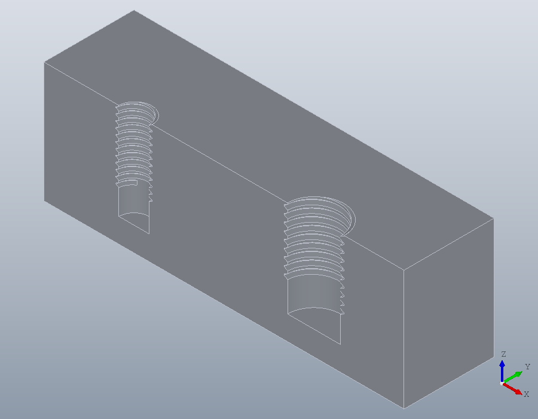
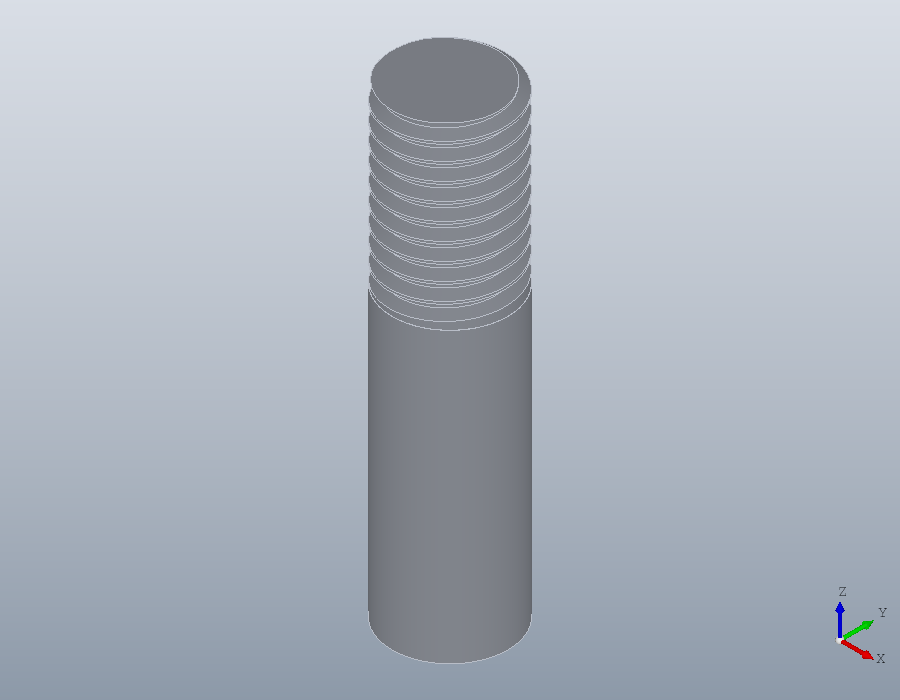
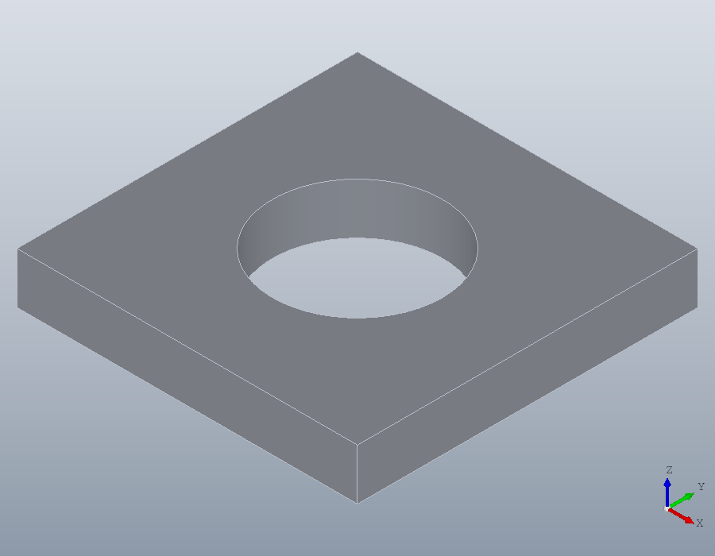
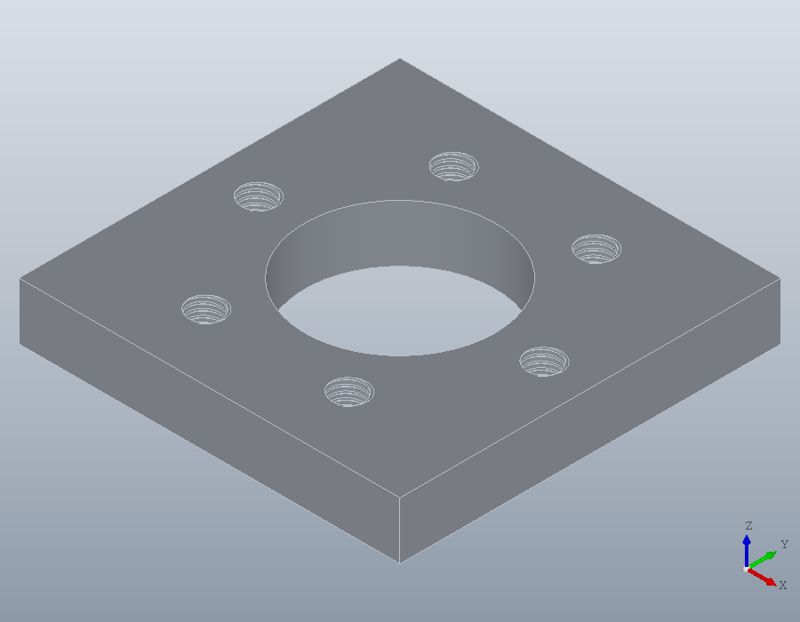

Holes and threads
A tapped hole is made in two steps, as in the workshop: hole drills it for the tap, and thread cuts the thread. The same thread cuts the thread of a rod, turned down first as a machinist turns a blank. Then a bolt circle is placed on a face picked in the viewer.
Tapping holes
Naming a thread drills the hole for tapping it by hand. A coarse thread is named by its diameter, 'M6', a fine one with its pitch, 'M10x1.25', from M1 to M64. The drill is the one ISO 2306 lists: 5 for M6, 6.8 for M8, 8.8 for M10x1.25.
block = solid.box (60, 30, 20);
block = hole (block, [15, 15, 20], 'M6', 16);
block = hole (block, [45, 15, 20], 'M10x1.25', 16);Every drill stays inside the 6H band of the thread's minor diameter, so a drawing that states 6H is met whatever the material. A tough material takes a larger drill and less engagement than a soft one: 'Material', 'stainless' takes the largest drill in the band, 6.9 for M8 against 6.8 in steel. 'Engagement' asks for the engagement as a percentage, 100 drilling at the minor diameter, and the drill is the one nearest it in the band. A percentage the band cannot give is refused, with the band it allows.
nut = solid.cylinder (8, 8);
nut = hole (nut, [0, 0, 8], 'M8', Inf, 'Material', 'stainless');
hole (nut, [0, 0, 8], 'M6', Inf, 'Engagement', 60);solid.Shape.hole: M6: engagement must lie between 78.2 and 100 %.Internal threads
thread takes the point and depth hole took. The holes are drilled 16 deep, and a thread deeper than its bore would drill the bore deeper, so it is refused.
thread (block, [15, 15, 20], 'M6', 18);solid.Shape.thread: M6 at (15, 15, 20): the bore is shallower than the thread.Threaded 12, the tap has room at the bottom. The thread is the basic profile of ISO 68-1, its crest left where the drill left it.
block = thread (block, [15, 15, 20], 'M6', 12);
block = thread (block, [45, 15, 20], 'M10x1.25', 12);Cut in half along the axes, the block shows both threads.
half = subtract (block, solid.box (60, 15, 20));
show (half);
External threads
Where the axis runs into a solid cylinder, the thread is external. A rod is designed at its nominal diameter, 10 for M10, and a machinist turns it down a little before threading it. thread does the same over the threaded length: to the top of tolerance class 6g, 9.968 for M10, so the thread fits every standard nut. The rod below keeps its full diameter where it is not threaded.
rod = solid.cylinder (5, 40);
rod = thread (rod, [0, 0, 40], 'M10', 15);
show (rod);
A rod turned to another diameter in the design, between 9.513 and 10 for M10, is threaded as it is. A cylinder outside that range, or a bore outside its own, is refused with the diameters the thread takes.
thread (solid.cylinder (4.5, 40), [0, 0, 40], 'M10', 15);solid.Shape.thread: M10 at (0, 0, 40): the axis meets neither a bore from 8.376 up to 10 nor a cylinder from 9.513 to 10.A bolt circle on a picked face
A flange 80 square with a bore of 40 through it takes six M8 screws on a circle of 60.
flange = solid.box (80, 80, 12);
flange = hole (flange, [40, 40, 12], 40, Inf);pickucs picks the top face as the sheet: the face, then the corner where the origin goes, then the corner its x axis runs towards, and Enter. The build clicks at those points, as in the tutorial on coordinate systems.
V = show (flange);
[U, CODE] = pickucs (V)U =
geom.UCS: origin [0, 0, 12], x axis [1, 0, 0], normal [0, 0, 1]
CODE = geom.UCS ([0, 0, 1], [0, 0, 12], [1, 0, 12])
CODE goes in the script in place of the pick.
U = geom.UCS ([0, 0, 1], [0, 0, 12], [1, 0, 12]);With a UCS in place of the point, hole and thread work against its normal, into the part, and 'At' gives the points in the face's own coordinates: one call drills the circle, and one threads it.
a = (0:60:300)';
XY = [40 + 30 * cosd(a), 40 + 30 * sind(a)];
flange = hole (flange, U, 'M8', Inf, 'At', XY);
flange = thread (flange, U, 'M8', Inf, 'At', XY);
show (flange);